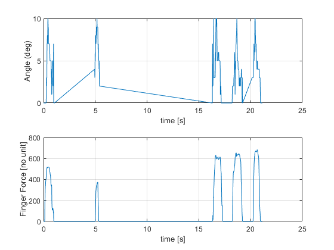

Contents
- System identification of cutting in steak with arthroscopic grasper
- Import file into Matlab. File should be in txt-format.
- We need to rearrange the data on the form iddata(output,input,sampling time)
- First, we check the sampling time
- Now, lets structure our data as iddata
- Visualize the data before starting system identification
System identification of cutting in steak with arthroscopic grasper
By Øystein Bjelland, IIR, NTNU
clear;
clc;
close all;
Import file into Matlab. File should be in txt-format.
filename = '45678_Pilot1_finger_17022021_FILTERED.txt'; %File must be located in same folder A = importdata(filename);
We need to rearrange the data on the form iddata(output,input,sampling time)
inputAngle_raw = A(:,2); %Input angle [deg] outputFingerForce_raw = A(:,1); %Output finger force [N] time_raw = A(:,3); %Raw time from millis() in Arduino [milliseconds] time = zeros(length(time_raw),1); Ts_vect = [];
First, we check the sampling time
for i = 2:length(time_raw) Ts = time_raw(i) - time_raw(i-1); Ts_vect = [Ts_vect, Ts]; time(i) = (time_raw(i) - time_raw(1))/1000; %Starting the time vector from zero and converting from ms to s. end maxTs = max(Ts_vect); disp('Maximum sample time [ms]: ') disp(maxTs) minTs = min(Ts_vect); disp('Minimum sample time [ms]: ') disp(minTs) Ts_average = mean(Ts_vect); disp('The average sample time is [ms]') disp(Ts_average) disp('Our sampling time is, Ts [sec]') Ts = round(Ts_average)*10^-3; disp(Ts)
Maximum sample time [ms]:
10871
Minimum sample time [ms]:
12
The average sample time is [ms]
66.0187
Our sampling time is, Ts [sec]
0.0660
Now, lets structure our data as iddata
FINGER_FORCE_DATA_1 = iddata(outputFingerForce_raw, inputAngle_raw, Ts);
Visualize the data before starting system identification
figure(1) subplot(2,1,1) plot(time, inputAngle_raw) grid on xlabel('time [s]') ylabel('Angle (deg)') subplot(2,1,2) plot(time, outputFingerForce_raw) grid on xlabel('time [s]') ylabel('Finger Force [no unit]')